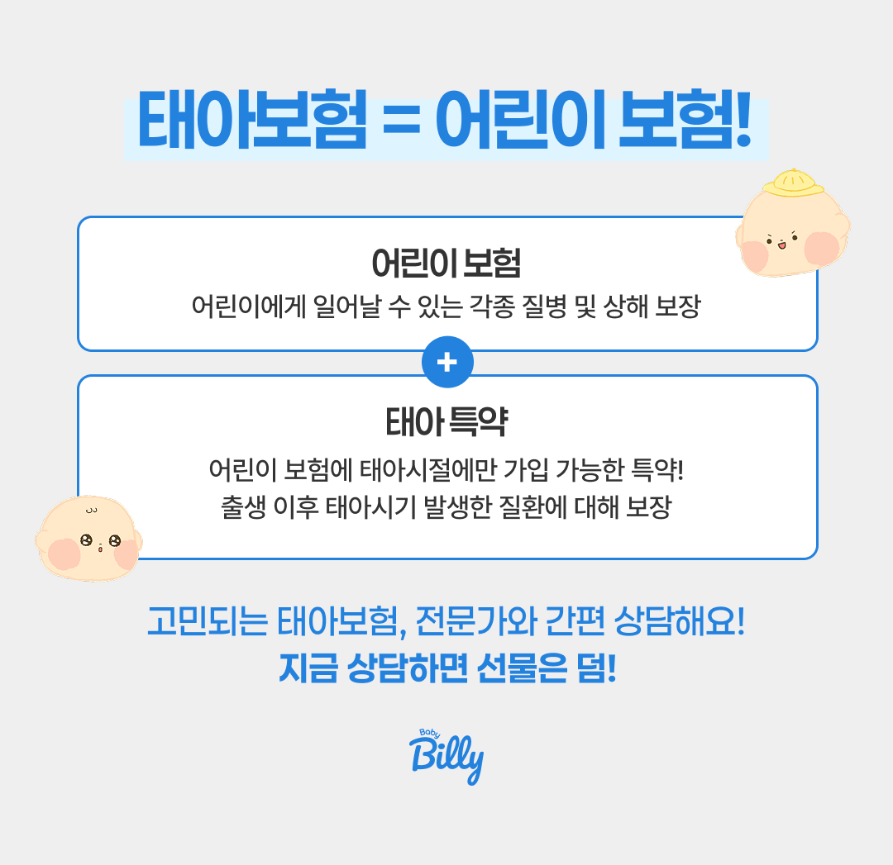
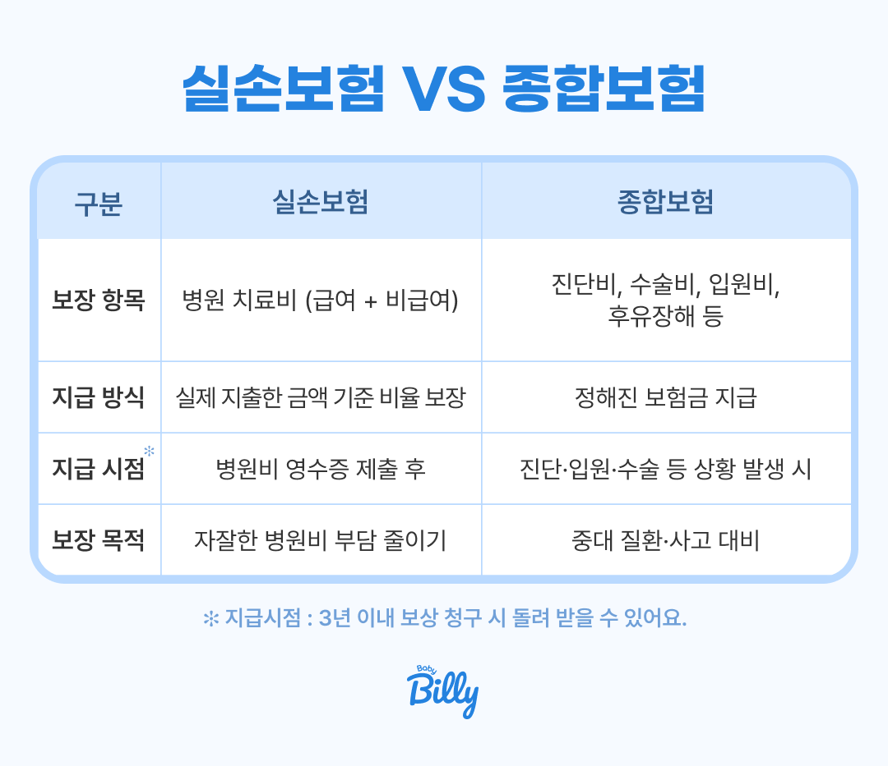
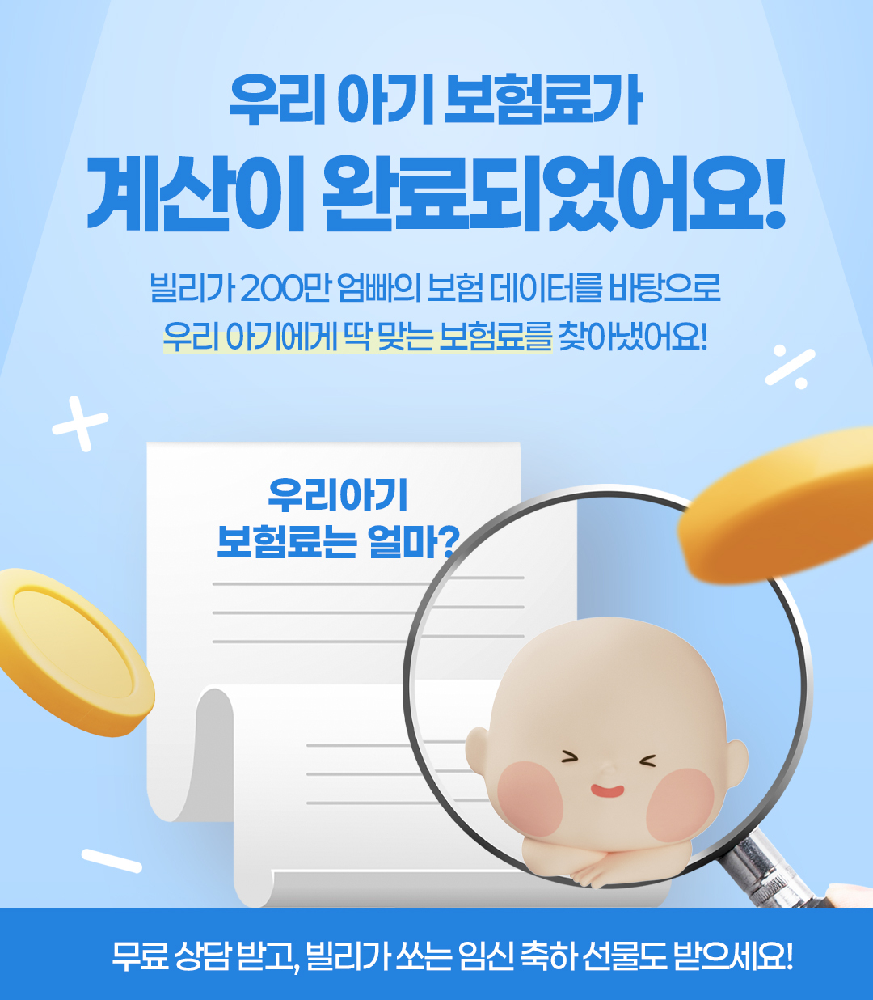

실손보험이 뭔가요?
한 줄로 정리해 드려요
실손보험은 병원에서 실제로 낸 돈의 일부를 돌려받는 보험이에요. 국민건강보험이 보장하지 않는 비급여 항목이나 본인부담금을 보전해 주는 역할을 해요.

💡 핵심 구조: 건강보험 본인부담금 + 비급여 의료비의 일부를 실손보험이 돌려줘요. 태아보험 안에 '실손 특약'으로 포함시킬 수도 있고, 별도 단독 실손으로 가입할 수도 있어요.
중요한 건 실손보험은 실제 지출한 의료비만큼만 보상한다는 점이에요. 두 개를 가입해도 의료비를 두 배로 받을 수 없어요. 이 부분은 뒤에서 더 자세히 설명할게요.
태아실손 vs 일반실손
이것만 알면 돼요
| 구분 | 태아실손 (태아보험 특약) | 일반실손 (별도 가입) |
|---|---|---|
| 가입 시점 | 임신 중 (출생 전) | 출생 후 가입 |
| 선천이상 담보 | ✅ 가능 (조건 충족 시) | ❌ 불가 |
| 출생 시 질환 소급 | ✅ 가능 | ❌ 불가 |
| 신생아 특약 포함 | ✅ 가능 | 별도 가입 필요 |
| 현재 적용 세대 | 4세대 실손 | 4세대 실손 |
| 중복 지급 여부 | ❌ 불가 (비례보상) | |
✅ 결론: 태아보험에 실손을 포함시키면 일반 실손보험에서는 절대 받을 수 없는 선천이상 보장이 가능해요. 이것이 태아보험 실손의 가장 큰 존재 이유예요. 베이비빌리 베동 커뮤니티와 실제 전문가 상담에서는 이 담보 여부를 가장 먼저 확인하라고 강조해요. 가입은 카톡으로만도 가능해요! 🍀
선천이상 담보
왜 이게 핵심인가요?
선천이상(Q코드)은 태아 발달 과정에서 형성된 신체 구조적 이상이에요. 심장 기형, 구개파열, 다운증후군 등이 포함돼요. 이런 질환은 출생 시 발견되는 경우가 많고, 수술·입원 비용이 매우 클 수 있어요.

| 가입 주수 | 선천이상 담보 여부 | 비고 |
|---|---|---|
| ~16주 (생명보험) | ✅ 가능 | 생명보험 기준 |
| ~22주 (손해보험) | ✅ 가능 | 손해보험 — 더 넓은 범위 |
| 22~28주 | ⚠️ 제한 | 보험사마다 다름 |
| 28주 이후 | ❌ 불가 | 대부분 가입 거절 |
| 출생 후 (일반 실손) | ❌ 불가 | 선천이상은 면책 조항 |
⚠️ 꼭 알아두세요: 출생 후에 선천이상이 발견되더라도, 태아보험 없이 출생 후에 가입한 일반 실손이나 어린이보험으로는 보장받을 수 없어요. 태아보험을 임신 중에 가입하고 선천이상 담보를 포함시켜야만 해요.
실손보험 1~4세대
뭐가 다른가요?
실손보험은 시대에 따라 보장 구조가 계속 바뀌었어요. 지금 태아보험에서 선택할 수 있는 건 4세대 실손뿐이에요.
100% 보장형
- 비급여 거의 전액 보장
- 자기부담금 없음
- 🚫 신규 가입 불가
80~90% 보장형
- 급여 10%, 비급여 20% 자기부담
- 3년 단위 갱신
- 🚫 신규 가입 불가
급·비급여 분리형
- 급여/비급여 계약 분리
- 도수치료 등 한도 제한
- 🚫 신규 가입 불가
지금 가입 가능
- 청구 많으면 보험료 할증
- 청구 없으면 보험료 할인
- 자기부담 입원 20%, 외래 20~30%
💡 아이에게 유리한 이유: 아이는 성인보다 비급여 치료를 반복적으로 받을 가능성이 낮아요. 4세대 실손의 할증 리스크가 상대적으로 낮고, 초기 보험료도 저렴해서 어린이에게 유리해요.
태아보험 안에 실손
어떻게 넣으면 되나요?
방법은 간단해요. 태아보험(어린이보험) 주계약에 '실손의료비 특약'을 추가하면 돼요. 아래 체크리스트로 확인해 보세요.

실손 특약을 주계약에 추가
태아보험 주계약에 '실손의료비 특약'을 선택해 추가해요. 별도 실손 보험을 따로 가입하지 않아도 돼요.
선천이상 담보 특약 확인
22주 이내 가입 시 '선천이상 입원의료비', '선천이상 수술비' 특약을 반드시 포함시키세요. 이게 태아실손보험의 핵심이에요.
신생아 관련 특약 추가
저체중아, 미숙아, 신생아 집중치료실(NICU) 입원 관련 특약을 추가하면 출생 직후 예상치 못한 상황에 대비할 수 있어요.
중복 실손 여부 확인
배우자 직장 단체보험이나 기존 어린이보험에 이미 실손이 있다면 중복 가입은 피하세요. 보험료만 2배로 낼 수 있어요.
실손 중복 가입
이렇게 하면 손해예요
실손보험을 두 개 가입해도 의료비를 두 배로 받을 수 없어요. 실제 지출한 의료비 안에서 비례보상하는 구조예요.
| 상황 | 실손 청구 결과 | 추천 여부 |
|---|---|---|
| 실손 1개 | 해당 실손에서 전액 청구 | ✅ 권장 |
| 실손 2개 | 양사가 비율대로 나눠 지급 (합계 = 의료비 이내) | ❌ 비효율 |
| 정액 특약 + 실손 1개 | 정액 지급 + 실손 청구 별도 | ✅ 추천 조합 |
- 태아보험에 이미 실손이 포함됐다면 → 별도 어린이 실손 불필요
- 배우자 직장 단체보험에 자녀 실손이 있는 경우
- 조부모가 선물로 어린이보험 가입 시 → 실손 중복 여부 반드시 확인
- 부모 실손보험에 자녀 특약으로 추가된 경우
⚠️ 주의: 실손은 중복해서 가입해도 의료비를 더 많이 받을 수 없어요. 보험료만 2배로 내고 혜택은 그대로예요. 가입 전에 반드시 기존 실손 유무를 확인하세요.
태아실손 구성
전문가와 함께 설계하세요
선천이상 담보부터 중복 가입 점검까지 한 번에 해결해 드려요.
태아보험 전문 상담사가 여러 보험사를 비교해 최적 구성을 안내해드려요.

💬 태아실손 무료 구성 상담 받기